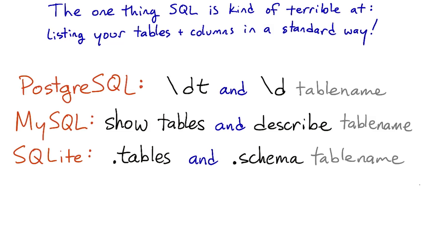
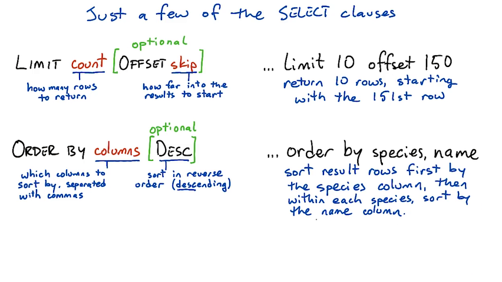
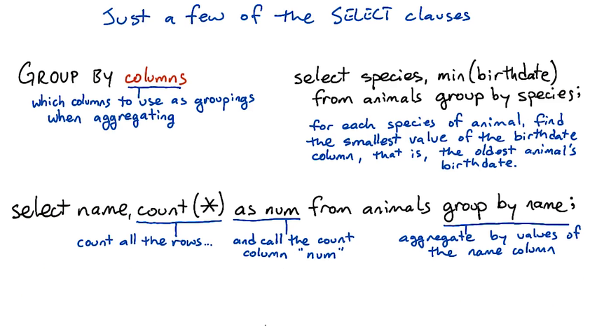
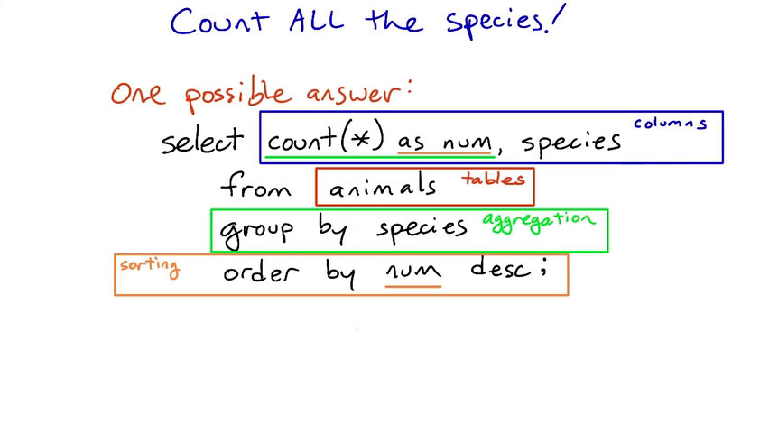
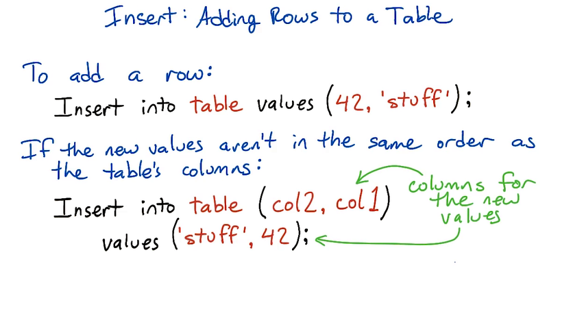
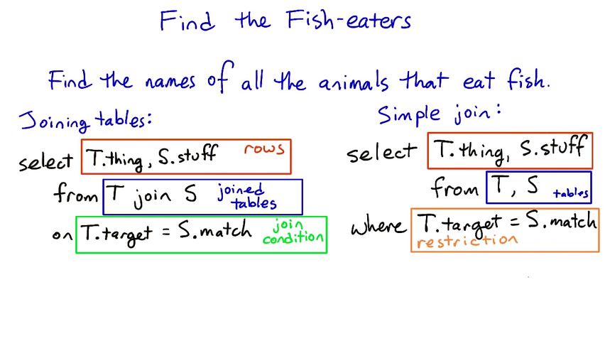
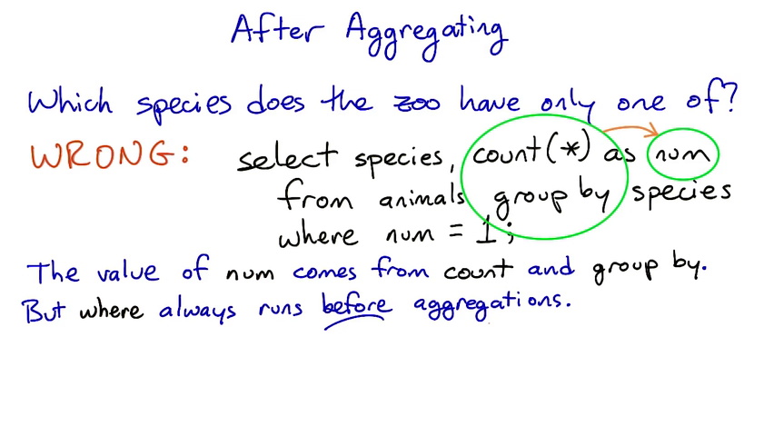
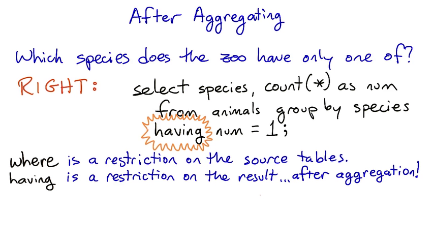

Here's just a sampling of the many data types that SQL supports. We won't be using most of these types in this course, though.
The exact list of types differs from one database to another. For a full list of types, check the manual for your database, such as this one for PostgreSQL.
text — a string of any length, like Python str or unicode types.
char(n) — a string of exactly n characters.
varchar(n) — a string of up to n characters.
integer — an integer value, like Python int.
real — a floating-point value, like Python float. Accurate up to six decimal places.
double precision — a higher-precision floating-point value. Accurate up to 15 decimal places.
decimal — an exact decimal value.
date — a calendar date; including year, month, and day.
time — a time of day.
timestamp — a date and time together.
The most basic form of the select statement is to select a single scalar value:
select 2 + 2 ;
More usefully, we can select one or more columns from a table. With no restrictions, this will return all rows in the table:
select name, species from animals ;
Columns are separated by commas; use * to select all columns from the tables.
Quite often, we don't want all the data from a table. We can restrict the rows using a variety of select clauses, listed below. There are also a wide variety of functions that can apply to columns; including aggregation functions that operate on values from several rows, such as max and count.
The where clause expresses restrictions — filtering a table for rows that follow a particular rule. where supports equalities, inequalities, and boolean operators (among other things):
The limit clause sets a limit on how many rows to return in the result table. The optional offset clause says how far to skip ahead into the results. So limit 10 offset 100 will return 10 results starting with the 101st.
The order by clause tells the database how to sort the results — usually according to one or more columns. So order by species, name says to sort results first by the species column, then by name within each species.
Ordering happens before limit/offset, so you can use them together to extract pages of alphabetized results. (Think of the pages of a dictionary.)
The optional desc modifier tells the database to order results in descending order — for instance from large numbers to small ones, or from Z to A.
The group by clause is only used with aggregations, such as max or sum. Without a group by clause, a select statement with an aggregation will aggregate over the whole selected table(s), returning only one row. With a group by clause, it will return one row for each distinct value of the column or expression in the group by clause.
The having clause works like the where clause, but it applies after group by aggregations take place. The syntax is like this:
select columns from tables group by column having condition ;
Usually, at least one of the columns will be an aggregate function such as count, max, or sum on one of the tables' columns. In order to apply having to an aggregated column, you'll want to give it a name using as. For instance, if you had a table of items sold in a store, and you wanted to find all the items that have sold more than five units, you could use:
select name, count(*) as num from sales having num > 5;
You can have a select statement that uses only where, or only group by, or group by and having, or where and group by, or all three of them!
But it doesn't usually make sense to use having without group by.
If you use both where and having, the where condition will filter the rows that are going into the aggregation, and the having condition will filter the rows that come out of it.
You can read more about having here:
http://www.postgresql.org/docs/9.4/static/sql-select.html#SQL-HAVING
By default, SQL statements are terminated with semicolons. You use a semicolon to terminate statements unless you've (rarely) set a new statement terminator.
The big difference between comparison operators in SQL and in Python is that we use = for equality in SQL, whereas Python uses ==.
select name from animals where species != 'gorilla' and name != 'Max';
Find all the llamas born between January 1, 1995 and December 31, 1998.
select
name
from
animals
where
species = 'llama' and
birthdate >= '1995-01-01' and
birthdate <= '1998-12-31'

This table lists individual animals in the zoo. Each animal has only one row. There may be multiple animals with the same name, or even multiple animals with the same name and species.
This table matches up species with the foods they eat. Every species in the zoo eats at least one sort of food, and many eat more than one. If a species eats more than one food, there will be more than one row for that species.
This table gives the (partial) biological taxonomic names for each species in the zoo. It can be used to find which species are more closely related to each other evolutionarily.
If you've never heard of this classification, don't worry about it; the details won't be necessary for this course. But if you're curious, Wikipedia articles Taxonomy and Biological classification may help.
This table gives the common names for each of the taxonomic orders in the taxonomy table.
And here are the SQL commands that were used to create those tables. We won't cover the create table command until lesson 4, but it may be interesting to look at:
create table animals (
name text,
species text,
birthdate date);
create table diet (
species text,
food text);
create table taxonomy (
name text,
species text,
genus text,
family text,
t_order text);
create table ordernames (
t_order text,
name text);
Remember: In SQL, we always put string and date values inside single quotes.
select max(name) from animals;
+-----------+
| max(name) |
+===========+
| Zoe |
+-----------+
select * from animals limit 10;
+----------+------------+------------+
| name | species | birthdate |
+==========+============+============+
| Andrea | alpaca | 2001-01-16 |
| Bruno | alpaca | 2004-09-23 |
| Charlie | alpaca | 2004-09-23 |
| Della | alpaca | 2006-01-09 |
| Emma | alpaca | 2013-03-16 |
| Fred | brown bear | 1993-05-02 |
| George | brown bear | 1997-06-24 |
| Molly | brown bear | 1981-10-17 |
| Eliezer | camel | 1971-03-08 |
| Giuseppe | camel | 1979-12-25 |
+----------+------------+------------+
select * from animals where species = 'orangutan' order by birthdate;
+---------+-----------+------------+
| name | species | birthdate |
+=========+===========+============+
| Raja | orangutan | 1975-04-09 |
| Kambing | orangutan | 1988-11-12 |
| Ratu | orangutan | 1989-09-15 |
| Putera | orangutan | 1993-06-29 |
| Gajah | orangutan | 2011-05-26 |
| Singa | orangutan | 2012-11-03 |
+---------+-----------+------------+
select name from animals where species = 'orangutan' order by birthdate desc;
+---------+
| name |
+=========+
| Singa |
| Gajah |
| Putera |
| Ratu |
| Kambing |
| Raja |
+---------+
select name, birthdate from animals order by name limit 10 offset 20;
+---------+------------+
| name | birthdate |
+=========+============+
| Duran | 2009-09-20 |
| Ekwensu | 1993-10-31 |
| Eli | 2002-02-22 |
| Eliezer | 1971-03-08 |
| Emma | 2013-03-16 |
| Emmy | 2008-04-15 |
| Fido | 1999-08-04 |
| Francis | 1996-04-27 |
| Fred | 1993-05-02 |
| Gajah | 2011-05-26 |
+---------+------------+
select species, min(birthdate) from animals group by species;
+------------+----------------+
| species | min(birthdate) |
+============+================+
| alpaca | 2001-01-16 |
| brown bear | 1981-10-17 |
| camel | 1971-03-08 |
| dingo | 1999-08-04 |
| echidna | 2003-01-31 |
| ferret | 2006-09-18 |
| gorilla | 1979-07-04 |
| hyena | 2007-06-08 |
| iguana | 1999-09-09 |
| jackal | 2003-12-21 |
| llama | 1984-01-05 |
| mongoose | 2006-02-28 |
| moose | 1990-03-27 |
| narwhal | 1975-02-07 |
| orangutan | 1975-04-09 |
| platypus | 2000-04-13 |
| raccoon | 2009-08-11 |
| sea lion | 1987-04-29 |
| unicorn | 1752-05-20 |
| warthog | 2007-05-20 |
| yak | 1996-09-20 |
| zebra | 1989-03-15 |
+------------+----------------+
select name, count(*) as num from animals
group by name
order by num desc
limit 5;
+---------+-----+
| name | num |
+=========+=====+
| George | 4 |
| Andrea | 2 |
| Charlie | 2 |
| John | 2 |
| Max | 2 |
+---------+-----+
select species, count(*) as count from animals
group by species
order by count desc
limit 1;
+---------+-------+
| species | count |
+=========+=======+
| gorilla | 9 |
+---------+-------+
  
The basic syntax for the insert statement:
insert into table ( column1, column2, ... ) values ( val1, val2, ... );
If the values are in the same order as the table's columns (starting with the first column), you don't have to specify the columns in the insert statement:
insert into table values ( val1, val2, ... );
insert into animals values ('Bitey', 'opossum', '2015-04-08');
For instance, if a table has three columns (a, b, c) and you want to insert into a and b, you can leave off the column names from the insert statement. But if you want to insert into b and c, or a and c, you have to specify the columns.
A single insert statement can only insert into a single table. (Contrast this with the select statement, which can pull data from several tables using a join.)


select animals.name
from animals join diet
on animals.species = diet.species
where food = 'fish'
+---------+
| name |
+=========+
| Fred |
| George |
| Molly |
| Bacon |
| Francis |
| Inara |
| Mal |
| River |
| Simon |
| Zoe |
+---------+
select
name
from
animals, diet
where
animals.species = diet.species
and
diet.food = 'fish'
columns that are used in join doesn't have to be in select
 
Find the one food that is eaten by only one animal.
select
diet.food, count(animals.name) as num
from
diet, animals
where
diet.species = animals.species
group by
diet.food
having
num = 1
+--------+-----+
| food | num |
+========+=====+
| snakes | 1 |
+--------+-----+
select
ordernames.name, count(animals.name) as num
from
ordernames, taxonomy, animals
where
ordernames.t_order = taxonomy.t_order
and
taxonomy.name = animals.species
group by
ordernames.name
order by
num desc
+---------------------+-----+
| name | num |
+=====================+=====+
| even-toed ungulates | 29 |
| carnivores | 25 |
| primates | 15 |
| odd-toed ungulates | 7 |
| lizards and snakes | 4 |
| monotremes | 4 |
| marsupials | 3 |
| whales and dolphins | 2 |
+---------------------+-----+
Here's one possible solution:
select ordernames.name, count(*) as num
from animals, taxonomy, ordernames
where animals.species = taxonomy.name
and taxonomy.t_order = ordernames.t_order
group by ordernames.name
order by num desc
And here's another, this time using the explicit join style:
select ordernames.name, count(*) as num
from (animals join taxonomy
on animals.species = taxonomy.name)
as ani_tax
join ordernames
on ani_tax.t_order = ordernames.t_order
group by ordernames.name
order by num desc
I think the upper version is much more readable than the lower one, because in the explicit join style you have to explicitly tell the database what order to join the tables in — ((a join b) join c) — instead of just letting the database worry about that.
If you're using a more barebones database (like SQLite) there can be a performance benefit to the explicit join style. But in PostgreSQL, the more server-oriented database system we'll be using next lesson, the query planner should optimize away any difference.